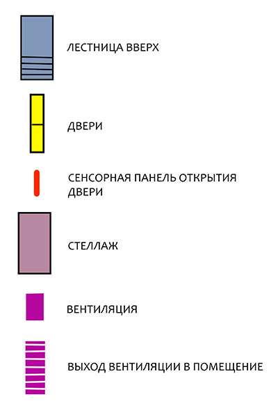

База: уровень -2
Цокольный этаж.
Здесь располагаются важные для функционирования станции и её обитателей помещения (и их содержимое).
 Уровень доступа: ограниченный (разрешение на посещение необходимо запрашивать у главного по станции).
Уровень доступа: ограниченный (разрешение на посещение необходимо запрашивать у главного по станции).
Здесь располагаются важные для функционирования станции и её обитателей помещения (и их содержимое).
Для просмотра на экране смартфона рекомендуется использовать альбомную ориентацию.
Чтобы посмотреть местоположение объекта кликните на его название ниже:


Дополнительная информация доступна при клике на подсвеченный объект или иконку

Склад топлива
Много стеллажей с кубами. Генератор
То самое важное помещение всей станции, благодаря которому она функционирует, а ее обитатели довольны. Гранаты в помещении не взрывать! Даже близко с ними не подходить! И на всякий случай катанами тоже не размахивать.